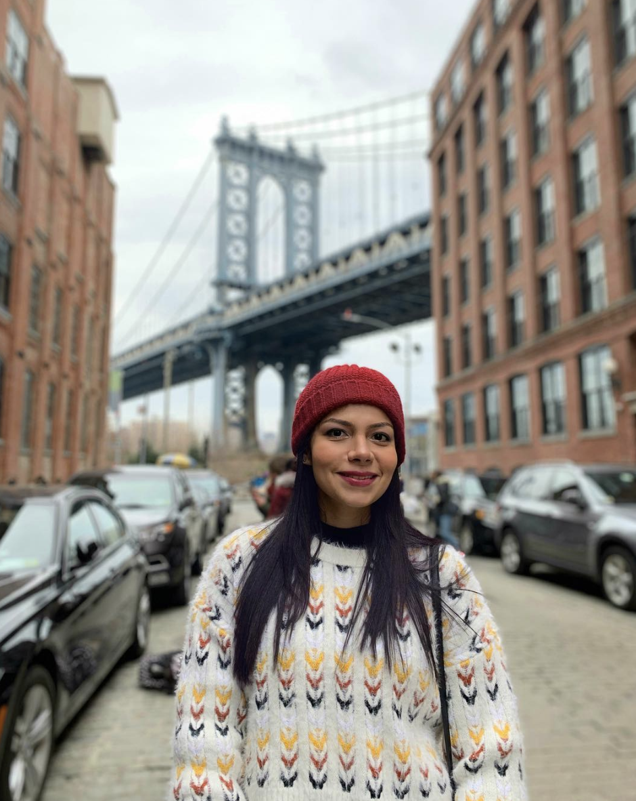

|  |
- Sofía Sánchez Barrios
- I was born in Santa Marta in 1990 so I'm 29 years old.
I describe myself like a woman with a strong sense of personal growth,
since I can remember I have always been trying to overcome myself in any area
and proof of this are all the goals that I've achieved so far:
- I studied almost for free all my degree
- I received the title of electronics engineer with honors
- I wont a scholarship to do my internship in Brazil
- I have a good level of Portuguese got during my internship
- I was studing Frech for a year and I certified a B1 level
- I've always wanted start a master abroad so I continue improving my english
- I learned in the course of my job all related to software testing and I was promoted to senior QA after a hard work
- Now, I continue learning about programming because who knows... life changes anytime
|
 Work Profile
Work Profile